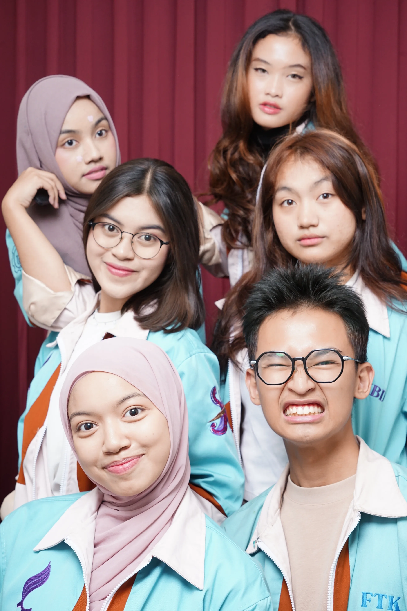
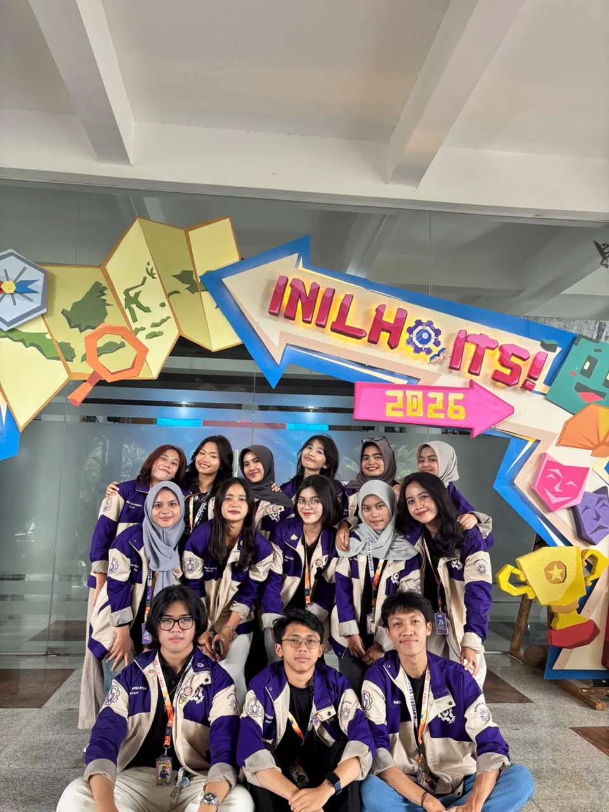
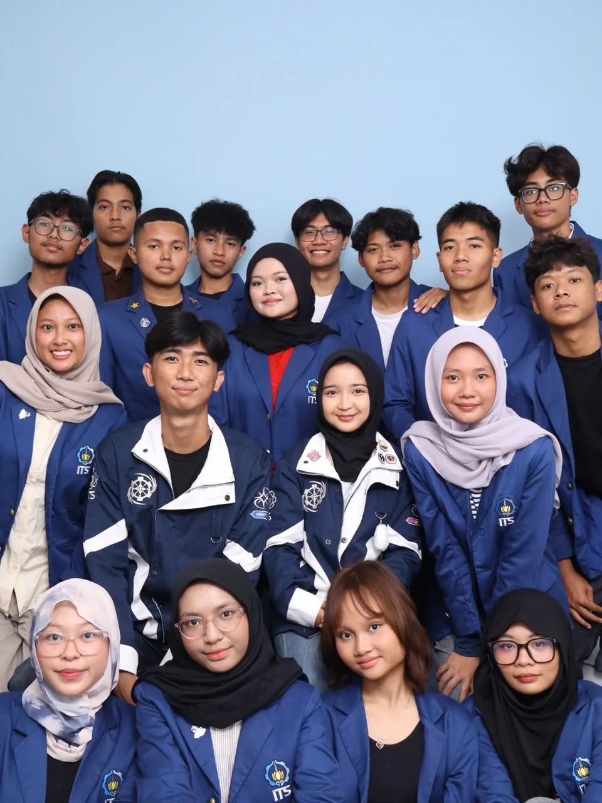
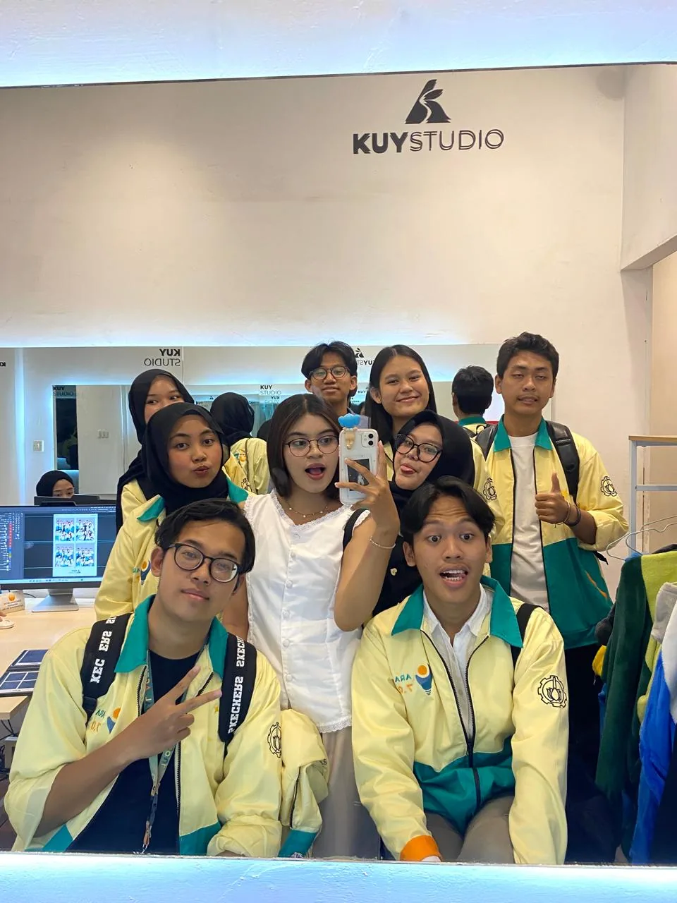
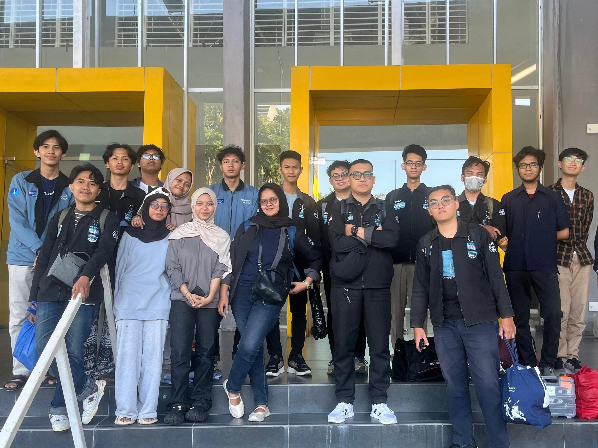

Pengalaman Selama Berkuliah
Disini adalah kanvas saya untuk dapat menari dan berkembang bersama dengan orang-orang hebat lainnya.

MABA CUP 2025
MABA CUP 2025 adalah ajang tahunan yang digagas dan dijalankan oleh mahasiswa baru, dibawah naungan Departemen Event Lembaga Minat Bakat Institut Teknologi Sepuluh Nopember Surabaya.
- Menjadi perpanjangan tangan panitia dalam menyebarkan informasi kegiatan MABA CUP 2025 kepada mahasiswa baru dari berbagai fakultas.
- Mengoordinasikan peserta kompetisi serta berperan sebagai Liaison Officer selama pelaksanaan acara, sehingga mendukung kelancaran kegiatan.
- Berkontribusi dalam pembuatan konten promosi dan dokumentasi, sekaligus memperluas jaringan serta mengasah keterampilan komunikasi dan organisasi.

INI LHO ITS 2026
INI LHO ITS 2026 adalah sebuah event tahunan yang diselenggarakan oleh INSTITUT TEKNOLOGI SEPULUH NOPEMBER. Acara ini bertujuan untuk mengenalkan ITS kepada Siswa/Siswi SMA dan juga masyarakat luas.
- Berperan sebagai manager dalam mengarahkan talent dan student ambassador sebagai representatif ITS, memastikan strategi promosi berjalan efektif dan pesan kampus tersampaikan dengan baik.
- Mendampingi talent dan student ambassador dalam setiap kegiatan/show, mulai dari briefing, koordinasi, hingga evaluasi agar penampilan berjalan maksimal dan profesional.
- Membangun relasi dengan siswa SMA yang berperan sebagai student ambassador, serta membina dan mendukung mereka dalam menyebarluaskan semangat melanjutkan ke perguruan tinggi.

GERIGI X UKM EXPO 2026
GERIGI X UKM EXPO 2026 adalah rangkaian acara penyambutan dan pengenalan kehidupan kampus terbesar bagi mahasiswa baru Institut Teknologi Sepuluh Nopember.
- Menjadi perpanjangan tangan panitia dengan berperan sebagai Kestari, yang bertugas secara langsung untuk membimbing, mengarahkan, dan mendampingi mahasiswa baru selama masa adaptasi mereka.
- Mengoordinasikan kelompok mahasiswa baru secara intensif, memastikan setiap informasi kegiatan tersampaikan dengan jelas, serta menjadi fasilitator yang sigap mendampingi peserta selama seluruh rangkaian acara berlangsung.
- Berkontribusi dalam menciptakan lingkungan orientasi yang suportif dan berkesan, sekaligus memperluas jaringan relasi antar departemen serta mengasah keterampilan kepemimpinan, komunikasi, dan manajemen massa.

ARA 7.0
ARA 7.0 adalah sebuah event yang diadakan oleh departemen teknologi informasi ITS, yang bertujuan sebagai pengembangan minat bakat dibidang cyber security, IoT, dan juga AI.
- Membantu perencanaan dan pelaksanaan event ARA 7.0 yang fokus pada pengembangan minat dan bakat di bidang cybersecurity, IoT, dan Artificial Intelligence.
- Berkoordinasi dengan tim untuk memastikan kelancaran teknis dan logistik selama acara berlangsung.
- Mengelola pendaftaran peserta serta memberikan informasi terkait event kepada siswa-siswi SMA/K yang menjadi target peserta.

IRIS TEAM
IRIS ITS (Institut Teknologi Sepuluh Nopember) adalah tim robotika andalan dari ITS yang berfokus dan berlaga di divisi KRSBI Beroda (Kontes Robot Sepak Bola Indonesia kategori Beroda).
- Robot IRIS bergerak, mengambil keputusan (menyerang, bertahan, atau mengoper), dan berkoordinasi dengan robot rekan setimnya di lapangan secara otomatis menggunakan algoritma kecerdasan buatan (AI)
- Setiap robot dilengkapi dengan kamera dan sensor untuk mendeteksi bola, garis lapangan, gawang, serta posisi lawan secara real-time.
- Menggunakan desain roda khusus (omni-wheels) yang memungkinkan robot bermanuver dan bergeser ke segala arah dengan sangat lincah tanpa harus memutar bodi robot terlebih dahulu.